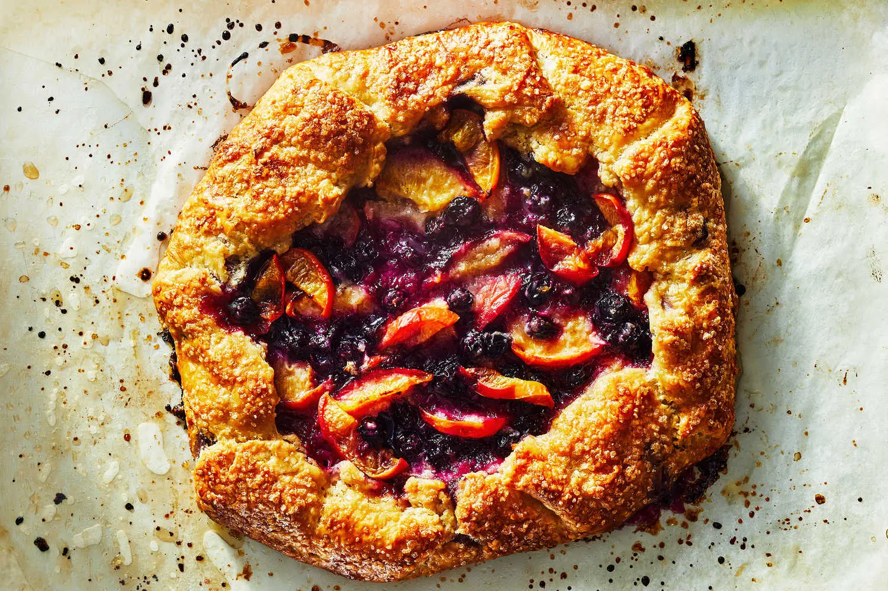

Home
Nectarine and Blueberry Galette

Nectarine and blueberry galette
Ingredients
- 6 to 8 tablespoons sugar
- 1/2 teaspoon lemon zest
- Seeds from 1/2 vanilla bean
- 1 tablespoon all-purpose flour
- Pinch of kosher salt
- 2 medium nectarines, pitted and slices into 1/2 inch slices
- 1 1/4 cups bluberries
- 1 recipe all-butter pie crust, chilled
- 1 egg
- 3/4 teaspoon turbinado sugar
- Pinch of flaky salt
Steps
- Heat oven to 400 degrees, and position a rack in the lower third of the oven.
Line a rimmed baking sheet with parchment paper.
- Combine sugar, lemon zest, and vanilla in a large bowl. Use
your fingertips to rub the zest and seeds into the sugar.
Add the flour and salt and stur to combine. Add the nectarines,
blueberries, and lemon juice, but don't stir yet.
- On a lightly floured surface, roll dough into a 12 inch round,
just under 1/4-inch thick. Transfer the dough to the prepared
baking sheet.
- Stir the filing to combine, then pile all the fruit in the center of the dough,
leaving a 2-inch border. Press the fruit gently to make sure there are no
large open pockets. Fold the edges of the dough up and over
the fruit and press gently to seal the folds.
- Put the whole baking sheet into the freezer, and chill the formed galette
until the dough is very firm, about 15 minutes. Brush dough with the beaten
egg, and sprinkle with sugar and salt. Bake until deep golden brown and the juices are
bubbling, about 45 minutes. Cool slightly before serving.